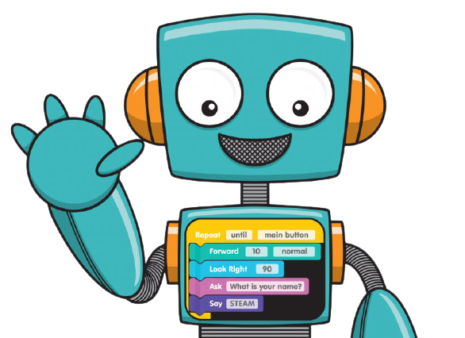
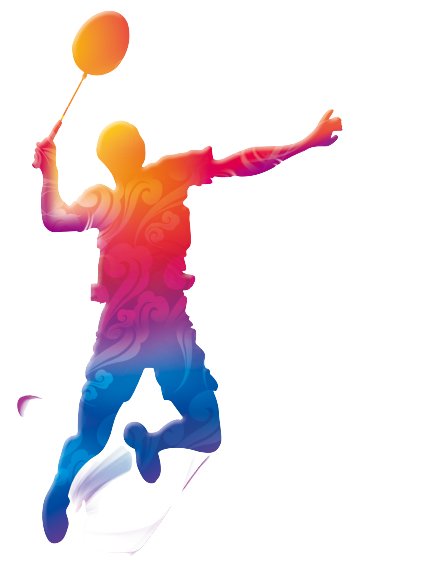

S K I L L S
Below are my few skills which define me and are a prime gem to my personality.
Learning New Skills:
Many people think that learning new things is not a skill bu according to me it is the fundamental skill which teaches us everything. Someone well said that,
"Knowledge Is Everywhere You Just Need The Habit To Absorb It."
I learn new skills from free courses from different organisations such as ShapeAI, Coursera, Udemy, Youtube, etc. I made this website by learning a new skill taught by ShapeAI's free workshop.

CODING:
Well my favourite skill I like to admire of is my coding skills. I believe I can code anything with the gain of continuous knowledge which motivates me in completing several challenges and projects.
According to me,
"Love For Coding Is The Passion Everyone Wants But A Few Own It"

SPORTS:
I believe the more you play the more capacity of your brain to learn new things increases. Sports make you fit to face the world and help in the overall development of an individual. I am good at Badminton, Volleyball, Cricket which help me in my overall growth.
"Sports Not Only Builds Better Athletes, It Helps Building Better People."